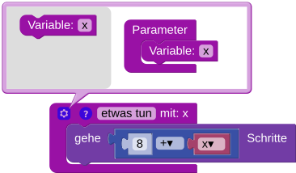
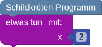

Die Schildkröte soll das Kreuz zeichnen.
Hinweis: Die Kreuzbalken sind vier Schritte breit.Die Schildkröte soll das Kreuz mehrfach zeichnen.
Hinweis: Die Kreuzbalken sind vier Schritte breit.Erstelle und verwende eine Funktion, die das Kreuz zeichnet.
Die Schildkröte soll das Kreuz mehrfach in verschiedener Größe zeichnen.
Hinweis: Die Kreuzbalken sollen einmal 2, einmal 3 und einmal 4 Schritte breit sein.
Erstelle und verwende eine Funktion, die das Kreuz zeichnet und für die Größe einen Eingabewert (Parameter) verwendet.
Füge der Funktion über die Einstellungen (Zahnrad-Icon) einen Parameter hinzu:

Wenn du die Funktion verwendest, musst du einen Wert für den Parameter angeben:

Schreibe und verwende eine Funktion, die das Kreuz zeichnet und für die Größe einen Parameter verwendet.
Diesen kannst du in den Klammern der Funktion angeben: def etwasTun(x):
Wenn du die Funktion verwendest, musst du einen Wert für den Parameter angeben: etwasTun(3)